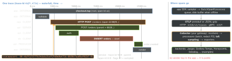

engineering · folio
In one line: OpenTelemetry (OTel) is the vendor-neutral standard for telemetry: an
API you instrument against, an SDK that samples, batches and exports, the
OTLP wire protocol and a Collector. A trace is a tree of
spans sharing one trace-id; the app starts it at the user’s tap, and the W3C
traceparent header carries it into every backend service — so one timeline shows
where the 3 seconds went.
Download PDF Print view LaTeX source


The model
- Span = name, trace-id, span-id, parent, kind (INTERNAL, CLIENT, SERVER, PRODUCER, CONSUMER), start/end, attributes, events (timestamped points), links (to other traces), status (Unset / Ok / Error). A trace = all spans with one trace-id.
- Metrics: counters, histograms, gauges — aggregated, cheap, never sampled. Logs: records stamped with trace/span id for correlation.
- Resource = who emitted it (
service.name, version, OS, device). Semantic conventions fix names:http.request.method,url.full,http.response.status_code,session.id. - API vs SDK: libraries call only the API (no-op without an SDK); the app configures the SDK: provider, sampler, processors, exporter.
- Context holds the active span; a propagator injects it into requests and the server extracts it. Baggage (
baggageheader): never PII.
Example — a manual root span (Swift)
import OpenTelemetryApi
let tracer = OpenTelemetry.instance.tracerProvider
.get(instrumentationName: "com.example.checkout",
instrumentationVersion: "1.4.0")
let span = tracer.spanBuilder(spanName: "checkout.tap")
.setSpanKind(spanKind: .internal)
.setActive(true) // URLSession spans become children
.startSpan()
span.setAttribute(key: "cart.items", value: cart.count) // no PII
do { try await api.placeOrder(cart) // CLIENT span + traceparent
span.status = .ok }
catch { span.status = .error(description: "\(type(of: error))") }
span.end() // on EVERY pathSDKs — status on opentelemetry.io (Sep 2026)
| Swift | opentelemetry-swift: traces stable, metrics + logs in development.
URLSession instrumentation (spans + header injection, shouldInjectTracingHeaders),
SDKResourceExtension, signpost integration |
| Android | opentelemetry-android RUM agent, alpha, on the Java SDK: lifecycle,
ANR, crashes, slow/frozen frames, OkHttp, startup, sessions (API 23+) |
| Web (JS) | traces + metrics stable, logs in development; fetch/XHR/document-load instrumentations |
| React Native | no official SDK — JS API + native SDKs, or a vendor SDK |
Sampling — who decides what you pay for
- Head sampling: decided at the root, before the outcome is known —
TraceIdRatioBased(0.1)wrapped inParentBased, so every child (and the backend) follows the01flag. Cheap, consistent, but blind to errors. - Tail sampling: in the Collector after the trace completes — keep all errors, all traces > 2 s, 5 % of the rest. Needs every span of a trace on the same Collector (route by trace-id) and memory to wait.
- Mobile: head-sample on device (millions of devices, metered radios); errors and crashes via an always-on path.
Export from a phone
BatchSpanProcessor(queue + size/time flush);SimpleSpanProcessoronly for debugging. OTLP retries 429/502/503/504 with backoff; honourpartial_success.- Flush when the app backgrounds (short background task), buffer to disk offline, cap the queue (drop oldest, count drops), gzip, batch to save radio wake-ups.
- Send to your Collector/gateway: it authenticates the app, redacts, samples, and lets you switch vendors by config.
What to instrument in an app
| app start | process start → first frame (cold/warm as an attribute) |
| screen load | appear → content ready; name the screen |
| network | auto CLIENT spans + traceparent to your hosts only |
| user flows | tap → result as the root (checkout, login, search) |
| local work | DB queries, decoding, image processing, long main-thread work |
| state | app version, network type, session.id, feature-flag arms |
Privacy
No PII in names, attributes, events, baggage: strip URL queries and ids, pseudonymise user ids. Honour consent; redact again in the Collector; declare it in the privacy manifest.
Traps
- The backend starts a new trace — propagator not configured, or a proxy/CDN strips
traceparent. Check the header on the wire. - Device clocks drift: a child “starts before” its parent. Trust durations, not cross-device offsets.
- User ids or raw URLs as metric attributes — cardinality explosion; use route templates (
/orders/{id}). - A span not ended on the error path is never exported (and leaks).
- Injecting
traceparentinto third-party hosts: leaks ids, can break CORS/signing.
Remember
Spans say what and how long, context says whose, traceparent carries it across,
sampling decides what you pay for, the Collector decides where it goes.